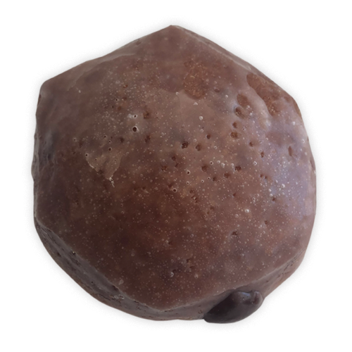

Like most people, I enjoy sugary foods. But if I could never crave sugary food again, I'd be happy: it's much healthier and I can get similar satisfaction elsewhere. Here I abstain from self-proclaimed sugary foods (>10 g added sugar per serving) for 31 days (01 January 2021 - 31 January 2021) and subjectively measure the intensity of sugar cravings and how I felt.
burkey's article so you say you want to lose weight... sums up my thoughts on the diet-behavior-psychology relationship well:
there were other small decisions he made that i feel made a difference – he did not waste time or energy lying to himself. yes he missed cake – so what? he wasn’t starving. he wasn’t even hungry. when he ate cake every week he missed it the second it was gone – he realized how temporary the reward was, and how lasting the cost. forced into a rational moment, he realized that he could feel that longing, react to it, and stay the same, or feel that longing, exercise some restraint, and improve.
start with being aware of when you are making decisions based on emotions. food does not need to be a reward. a celebration. a treat. if you are reaching for something sweet because you “deserve” it, you are being emotional and irrational. fucking stop it. this also has to do with seeing other people who can get away with shit that you can’t.
Habits are incredibly strong and sway us to do things we don't truly want to do. Breaking these habits and associations makes cutting sugar much easier. After identifying these contributing habits (e.g., the route to work you use to go from home>Starbucks>work), try to find an alternative.
Relationships—friends, family, significant others—may suffer in the process. Like drinking alcohol, some relationships are partially tied together via unhealthy foods, leaving two options: eliminate that knot or continue with the activity, just at a reduced amount. Both will likely be met with some pushback.
A Reddit thread show that this pushback is fairly commonplace:
The Obese Buddy doesn't like to see you work out or eat right, because it's a reflection of what they should be doing.
The Diet Discourager doesn't want you to follow your diet, and they certainly don't want you following any sort of healthier eating system that's different from what they're used to.
Crap Eating Co-Workers go out to lunch every day to burger joints and other hi-cal fast food places. Act like you are being anti-social and take it personally when you decline. Look at you like you just grew a tail when you explain that you bring your own food for lunch. Shuffle up to your cube, say something about "all that meat you eat is bad your you" while sucking down their third 32oz soda of the day...someone brings doughnuts or cake or some kind of 'treat' for the office. To refuse a slice of birthday cake is taken as an insult.
Junk Food Buying Spouse keeps the house stocked with ice cream, pot pies, chips, and soda.
I believe the judgment these types of people give is because it is reminding them of what they are/aren't doing. It's arguably impossible to change this aspect of someone, and one shouldn't try. Good (quality, not time spent together) friends will not consistently check any of those boxes.
Treating oneself to sweets has its place after a long effort, training cycle, or similar. It does not have a place after a single training session or event. This rationalization of "I worked hard so I deserve it" is a major factor in getting people in that unhealthy hole.
I've always had trouble with moderation. I abstain from something unhealthy for some amount of time, eat one serving, and then 15 more. One of burkey's quotes from above again sums up my thoughts well:
when he ate cake every week he missed it the second it was gone – he realized how temporary the reward was, and how lasting the cost. forced into a rational moment, he realized that he could feel that longing, react to it, and stay the same, or feel that longing, exercise some restraint, and improve.
Guzey also provides some insight on the fleeting nature of unhealthy temptations here:
Resisting temptations supposed to be difficult. I think it’s often much easier than we are used to believe. 3 reasons:
- our preferences are very, very dumb and desires tend to fall off extremely quickly.
- also we often literally forget about the temptation even if we do something else for like 1 minute
- also brain interprets any amount of waiting as a credible signal that we’re prepared to wait and decreases temptation’s strength
In summary: temptations are temporary and will likely be gone in a matter of minutes and resisting the unhealthy ones is both a short- and long-term positive. Further, satisfaction of some temptations may only last throughout the action, and come right back as soon you are finished. So, unless that 20 seconds of cake chewing is really good, abstaining is a better move.
Of course, there are moments where you can't abstain for whatever reason. Committing to one single action and abstaining from there on out is the way to go.
Coming up with excuses to abstain may also help stave off any awkwardness: X upsets my stomach, I don't like the taste of X, etc.
Below is a collection of online anecdotes by people who cut sugar out of their diet.
My husband and I went sugarless for 21 days years back. Including cutting out refined starches. We had intense headaches that started on the third day if I remember correctly. Mine lasted 2 days, him 4. That was the only downside.
Pros were huge. Best of the best was that everything tasted great. All fruit were super sweet and dessert like. Vegetables had a depth of flavor I never noticed before. Even grains like oats and rice were yummy. We lost a few pounds to boot, though that wasn't our intention. My skin improved. So did my sleep.
I found I overall felt so much better when I stopped eating foods with added sugar. Skin cleared up and much more energy. You will have withdrawal headaches for a couple of days, but otherwise you will feel better.
For the first three days, I was indeed lacking in energy and felt pretty tired, but I didn't by any means feel awful. After those three days I felt amazing; I had tonnes of energy, I fell asleep instantly when I went to bed and woke up feeling energetic, clear and alert.
Not only do I wake up feeling great, but this greatness lasts all throughout the day with barely any dips. Before I quit sugar I would usually take a nap in the middle of the day and after I ate my first meal at 12 I would be incredibly tired. Now, although I do have a dip in energy after I've eaten, it's not by much and I still feel like I can power through the things I have to do.
The extra energy made me feel much stronger on all my exercises and to make things even better my pull ups, dips, tucked front levers and tucked planche which had seriously been plateauing, suddenly went on the rise again. This is despite the fact that I'm in a calorific deficit.
noticing improved energy levels and generally feeling like a better human being throughout the day.
after being off the sugar for 26 of 30 days (I got-got traveling to a foreign country), I couldn't believe how sensitive I became to it.
Below I list all foods I ate that could be considered sugary or sweet and how I felt that day. Each number corresponds to the day in January 2021, e.g., 3 is 03 January 2021.
To check if and how my sugar sensitivity/cravings have changed, I ate two sweet foods: a Devil's Food donut from Shipley Do-Nuts, consisting of 36 g of sugar packed in one delicious piece of dough and filling. [FILL RESULTS HERE]
Finding sweet tasting things with minimal added sugar is incredibly helpful for somewhat-healthily satisfying a sweet craving. A few options:
As I mentioned in the psychology section, temptations are temporary, no matter how strong they feel in the moment. Distracting yourself for a few minutes on another task will likely reduce their strength, if not removing them completely.
My temptation reduction method is as follows:
This method worked successfully the few times I used it throughout the 30 days.
A few questions I or the reader may have about sugar. Some answered, others awaiting.